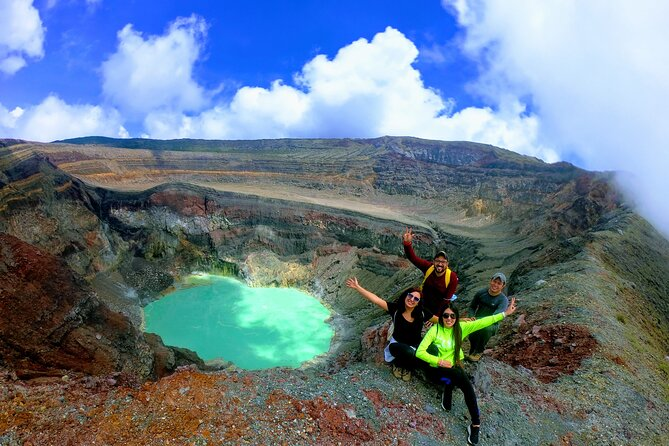
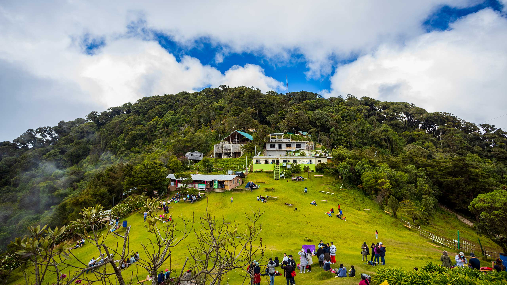

Destinos destacados

Volcan de Santa Ana 2,381 msnm
El volcán activo más alto de El Salvador, con una laguna cratérica de color turquesa única en Centroamérica.
8 horas
Avanzado
Guia obligatorio

Cerro el Pital 2,730 msnm
El punto más alto de El Salvador, en la frontera con Honduras. Ideal para acampar y ver el amanecer.
6 horas
Intermedio
Permite camping

Volcan de Izalco1,910 msnm
Conocido como el "Faro del Pacífico", uno de los volcanes más jóvenes y activos de América
5 horas
Intermedio
Vista al mar